Atomic Lounge (formerly Vintage Chonk) is a warm, modern-classic synthesizer you can play on two kinds of hardware and on Windows. Its layout follows a famous wavetable soft synth's way of working; its sound and looks come from 1970s analogue instruments. On Windows the synthesizer is called REGOLITH, the steady ground under ORBIT, its second engine. The FM-1 firmware and the Android app have not been renamed yet: their screens, install pages and app list still say Vintage Chonk, and this guide quotes them as they are.
| M-VAVE FM-1 | Android tablet | |
|---|---|---|
| Form | Replacement firmware | App (APK) |
| Voices | up to 8 | up to 16 |
| Controls | Knobs, buttons, 27 keys, 240×240 screen | Touch panel, 37-key touch keyboard, wheels |
| Presets | 64 slots | Factory list + your own, by name |
| Massive import | Through the browser converter | Built in (IMPORT .NMSV) |
| Undo | 16 steps | None |
| Sequencer | Mono, 8 patterns | None |
adb to install the app.Everything in this part is the same on the FM-1 and on the tablet. Learn the ideas once, then use whichever instrument is in front of you.
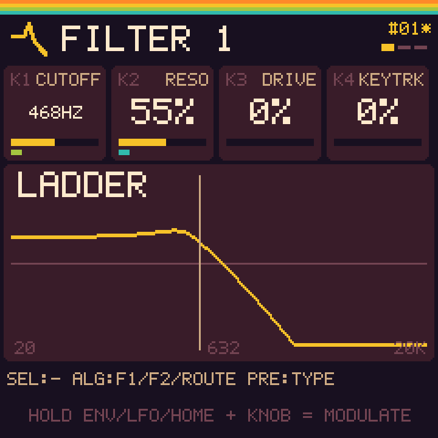
Sound flows left to right: sources, filters, the amplifier, then the effects. Modulators move the knobs while you play.
Oscillator 1 is on in a new sound; oscillators 2 and 3 are off until you switch them on. Each has these controls:
| Control | What it does |
|---|---|
| On / off | Switches the oscillator on. |
| Wave | Picks one of eight classic analogue waveforms: triangle, shark (between triangle and saw), reverse saw, saw, square, pulse 30 %, pulse 12 %, pulse 6 %. The narrower the pulse, the thinner and more nasal the tone. |
| Range | The octave, in organ footage: 64', 32', 16', 8' (normal pitch), 4', 2', 1'. Lower footage numbers sound higher. |
| Tune / pitch | Semitones above or below the range. |
| Fine | ±100 cents. Detune two oscillators a few cents for a thick, beating sound. |
| Intensity | Bends the waveform's phase, which brightens and reshapes it. (An approximation of the intensity control of the soft synth this layout follows.) |
| Amp | The oscillator's level in the mix. |
| Route (F1 · F2) | Sends the oscillator to filter 1, filter 2, or a blend (the FM-1 shows, for example, 50:50). |
A sine wave that follows the note, tuned with its own pitch (±48 semitones from the note). It has three jobs, each with an amount and a target oscillator (off, OSC 1, OSC 2 or OSC 3):
| Job | Sound |
|---|---|
| Ring | Ring modulation: metallic, bell-like sidebands. |
| Phase | Phase modulation: FM-style brightness and bite. |
| Position (wave) | Wobbles the target's waveform position at audio rate. |
Colour (dark to bright), amp (level) and route (filter 1 to filter 2). A touch of noise adds breath to leads and pads.
Filter FM (mod oscillator to a filter) is stored with the sound but not heard yet; the FM-1 says FILTER FM: STORED, NOT RENDERED YET.
On the tablet the panel also shows a FEEDBACK section, which is greyed out ("not in this engine version yet"), and a DRIFT knob (ANALOG) for slow per-voice pitch drift.
Two filters, each with its own type, cutoff, resonance, drive and key tracking.
| Type | Character |
|---|---|
| LADDER | Classic 24 dB/octave transistor ladder: four poles, resonance feedback and input saturation. Sings and self-oscillates at full resonance. |
| ACID | 303-style diode ladder: about 18 dB/octave, hotter saturation, and the bass stays full at high resonance. Squelchy basslines. |
| LP4 | Clean 4-pole low-pass. |
| LP2 | Gentle 2-pole low-pass: more of the top end stays. |
| HP | High-pass: removes lows. Thins pads, makes room in a mix. |
| BP | Band-pass: only a band around the cutoff. Nasal, vocal, telephone tones. |
| NOTCH | Cuts a narrow band around the cutoff. Phaser-like when the cutoff moves. |
| OFF | No filtering. Filter 2 is OFF in a new sound. |
| Control | What it does |
|---|---|
| Cutoff | The filter's frequency, about 8 Hz to 21 kHz (the FM-1 shows Hz). |
| Resonance | Called RESO on the FM-1 and EMPHASIS on the tablet. Boosts frequencies at the cutoff. |
| Drive | Pushes the filter input up to 8 times harder into a soft clip: warmer, then grittier. |
| Key track | −100 % to +100 %. At +100 % the cutoff follows the keyboard one to one, so high notes stay as bright as low ones. |
An envelope draws a shape each time you press a key. ENV 4 always controls the loudness; ENV 1-3 are free for anything you route them to.
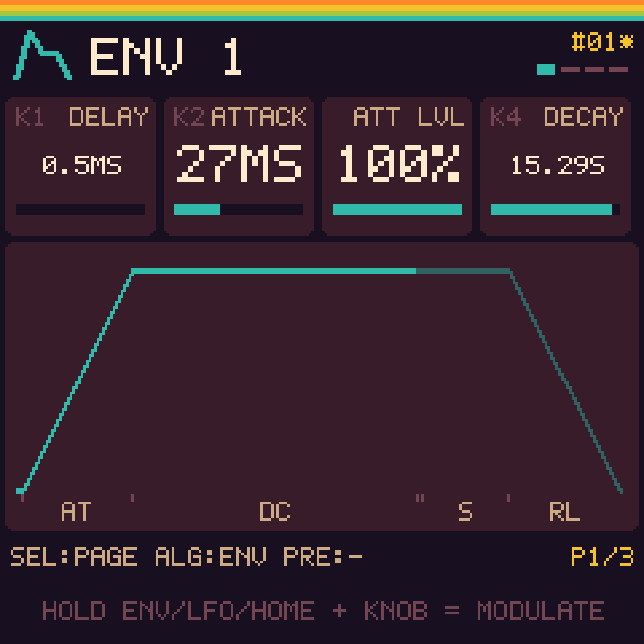
| Stage | Meaning |
|---|---|
| Delay | Wait before the envelope starts. |
| Attack | Time to rise to the attack level. |
| Attack level | How high the attack goes. |
| Decay | Time to fall to the decay level. |
| Decay level | Where the decay stops. On the FM-1, turned fully down it reads =SUS: a plain ADSR. |
| Sustain time | Time to move from the decay level to the sustain level. |
| Sustain | The level held while the key is down. |
| Release | Time to fade after the key is let go. |
| Loop | Repeats the envelope while the key is held: a rhythmic, LFO-like shape. |
All times run from 0.5 ms to 30 s on an exponential scale, so small times are easy to set precisely.
Four modulator slots, numbered 5 to 8. Each slot is one of three kinds, and you can switch kinds at any time. Switching keeps the data of the other kinds, so nothing is lost.
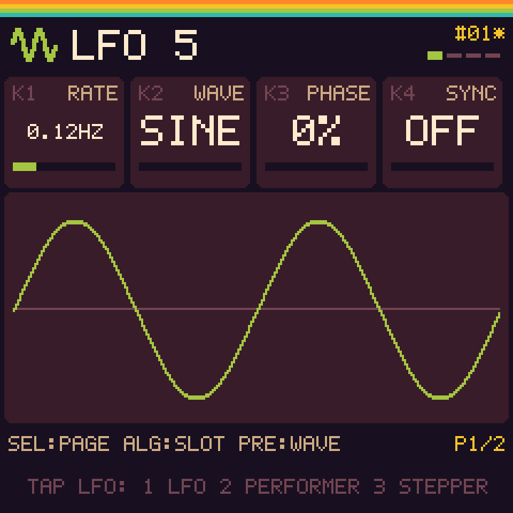
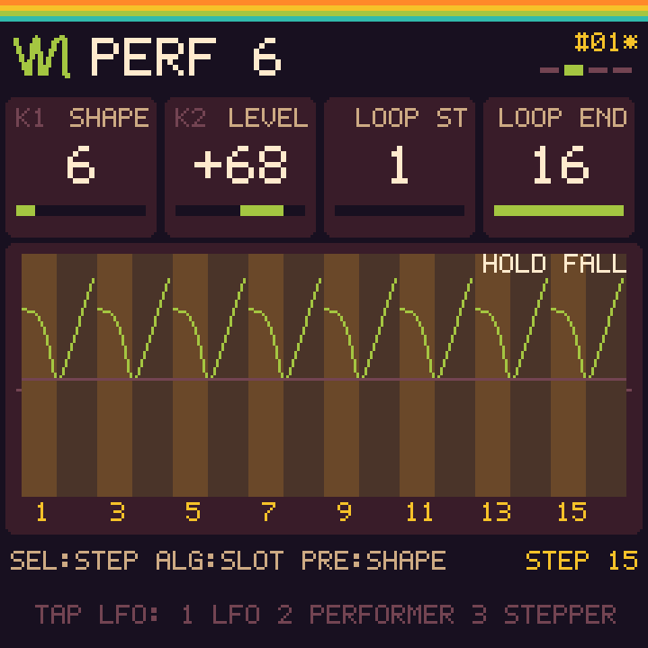
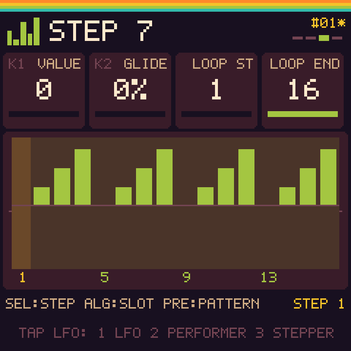
| Rate | 0.02 Hz to 40 Hz, or, with sync on, a note division: 1/32, 1/16T, 1/16, 1/8T, 3/32, 1/8, 1/4T, 3/16, 1/4, 3/8, 1/2, 1 bar, 2 bars. |
| Wave | Sine, triangle, saw up, saw down, square, sample-and-hold. |
| Phase | Where in the cycle the LFO starts when key sync is on. |
| Sync | Rate follows the tempo instead of Hz. |
| Key sync / retrig | Restart the wave with each note. |
| Unipolar | Move only upwards from the knob's position, instead of up and down around it. |
Sixteen steps. Each step has a shape (one of 32 curves: rises, falls, ramps, bumps, holds and more; shapes 1-16 recreate a classic soft-synth Performer library and 17-32 are Atomic Lounge's own) and a level (−100 to +100). Loop start and loop end choose which steps play. Rate (one step per cycle), sync, key sync and unipolar work as on the LFO.
Sixteen values (−100 to +100) played in turn, with glide between steps and the same loop, rate and sync controls: rhythmic filter patterns, arpeggio-like pitch jumps, gated volume.
Six effects, always in this order. Each one is off (and uses no processing) when its first control is at zero.
OCT FUZZ → TAPE → ENSEMBLE → BBD ECHO → OIL CAN → REVERB
| Effect | Sound | FM-1 knobs | Tablet controls |
|---|---|---|---|
| OCT FUZZ | Octave-down divider into a starved, gated fuzz and a blown speaker. | AMOUNT, OCTAVE, TONE, LEVEL | FUZZ, OCTAVE, TONE, LEVEL, on/off |
| TAPE | Warm tape saturation and compression, optional wow and flutter. | DRIVE, TONE, LEVEL, WOW | DRIVE, TONE, LEVEL, on/off |
| ENSEMBLE | 1980s polysynth chorus: I (slow), II (faster), I+II (fast, shallow), VIBRATO. | MODE, MIX, VIB RATE, VIB DPTH | MODE, MIX |
| BBD ECHO | Bucket-brigade delay: each repeat darker and grittier; self-oscillates a little at full feedback. | MIX, TIME, FEEDBK, MOD; page 2: TONE, SYNC | MIX, TIME, REPEATS, MOD, TONE, SYNC, DIVISION, on/off |
| OIL CAN | Oil-can delay: clear, slightly warbly repeats; SMEAR melts them into a wash. | MIX, TIME, FEEDBK, WARBLE; page 2: SMEAR, SYNC | MIX, TIME, REPEATS, WARBLE, SMEAR, SYNC, DIVISION, on/off |
| REVERB | TWIN TANK: long three-spring tank left, short two-spring tank right. SPRING: sings above about three quarters. | TYPE, AMOUNT, HOLD (SPRING: endless howl) | TYPE, MIX, on/off |
Switch SYNC on for BBD ECHO or OIL CAN and TIME becomes a note value instead of milliseconds: 1/32, 1/16T, 1/16, 1/8T, 1/16. (dotted), 1/8, 1/4T, 1/8., 1/4, 1/4., 1/2, 1 bar, 2 bars. Switching SYNC on picks the note value nearest the time you had. If a note value is too long for the echo's memory at the current tempo, the echo plays the longest one that fits; the FM-1 then marks the value with *, and the tablet's PLAYS readout shows what really plays (for example PLAYS 1/8. · 375 ms).
A routing connects a source to a destination with a depth from −100 % to +100 %. Negative depths move the destination the other way. Each sound has 16 routing slots. You can make them by hand in the MATRIX, or, more quickly, straight from the knob you want to move (FM-1: chapter 13; tablet: chapter 18).
| Sources | |
|---|---|
| ENV 1-4 | the envelopes |
| 5-8 | LFO / Performer / Stepper slots (shown as LFO5-LFO8 in the matrix) |
| MAC 1-8 | the eight macros |
| VEL KEY | velocity; keyboard position |
| MODW BEND AFTT | mod wheel, pitch bend, aftertouch |
| RAND ONE OSC3 | a new random value per note; a constant; oscillator 3's waveform used as a modulator |
| Destinations | |
|---|---|
| PITCH | all oscillators |
| O1-O3 PITCH, WAVE, INTNS, AMP | each oscillator's pitch, wave position, intensity, level |
| NOISE | noise level |
| F1/F2 CUT, F1/F2 RES | filter cutoffs and resonances |
| SER/PAR | the filter routing blend |
| DRIVE | the TAPE drive |
| AMP, PAN | output level; stereo position |
| L5 RATE, L6 RATE | the rate of slots 5 and 6 |
Eight macro knobs per sound. A macro does nothing by itself: route it to one or more destinations and it becomes a "performance knob" that moves them together. Macros 1-8 also answer MIDI CC 16-23, so a controller can play them live.
| POLY | Chords. Up to 8 voices on the FM-1 (set with VOICES), 16 on the tablet. |
| MONO | One note at a time; each new note restarts the envelopes. |
| LEGATO | One note at a time; overlapping notes glide without restarting the envelopes. |
| Glide | Portamento time between notes; zero is off. |
| Bend | Pitch-bend range, 0-24 semitones. |
| Velocity | How much key velocity changes the volume (0 = none). The FM-1's own keys always play at velocity 100; a USB keyboard brings real velocity. |
| Master | The sound's output level, ×0.00 to ×4.00 (some converted sounds need more than ×1). |
Installing the firmware, finding your way round the panel, and editing every part of a sound with four knobs, three encoders and a 240-pixel screen.
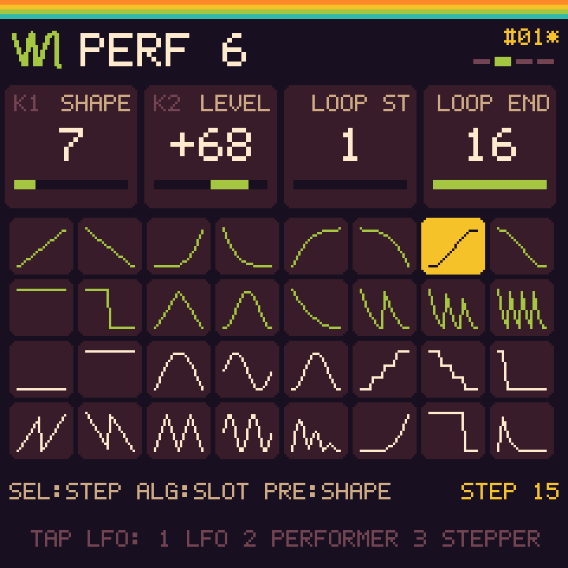
You install Vintage Chonk over USB from a small local web page that uses the FM-1's own updater code, unchanged. The same page can put M-VAVE's original V15 firmware back.
python -I tools/flash/build_flash_page.py vintage-chonkbuild/flash/index.html.python -m http.server 8790 --bind 127.0.0.1 --directory build/flashhttp://127.0.0.1:8790 in Chrome or Edge. Click 1. Connect (allow MIDI when asked) and allow MIDI and SysEx access.Updating to a newer Vintage Chonk build works the same way: build the page for the new package, connect, and click 2. Install Vintage Chonk.
Open the same install page with the FM-1 connected, click 1. Connect, then Restore original V15. The page carries the original V15 image and checks its fingerprint before writing.
A unit that boot-loops (the screen flickers or restarts over and over, and no USB device appears) cannot be reached by the install page. The FM-1 can still be brought back with a cheap helper called an FM-1 Transporter: a small RP2040 board that forces the FM-1 into its built-in download mode, backs up the whole flash and writes V15 back. It never touches the boot area.
pyserial| green (D+) | GP0 |
| white (D−) | GP1 |
| black (GND) | GND |
| red (VBUS) | not connected |
The cable's USB-C goes into the FM-1; the RP2040 connects to the computer with its own cable.
third_party/MvaveFM1Unbricker: python fm1_transporter_recover.py setuppython fm1_transporter_recover.py flash-xiaoFM-1_015.fwsc (V15) next to the script as FM-1.fwscpython fm1_transporter_recover.py wizard --v15 FM-1.fwsc, and switch the FM-1 on when asked. The wizard reads the flash twice, does a dry run, and writes only after you type WRITE.python -I tools/fm1_identify.py should answer FM-1_015.Full details, pin diagram and safety notes: docs/RECOVERY_TRANSPORTER.md and docs/HARDWARE_TEST_PLAN.md in the repository.
Holding OCT− and OCT+ at power-on did not reach the download mode on the developer's unit; the Transporter did.
| Control | With this firmware |
|---|---|
| MASTER | Headphone and line volume of the whole instrument. |
| KNOB1-KNOB4 | The four values in the tiles across the top of the screen, left to right. |
| SELECT | The page within the section (P1/2, P2/2 ...). On Performer and Stepper pages: the step cursor. |
| ALGORITHM | Which one: OSC 1/2/3/MOD/NOISE, FILTER 1/2/ROUTING, ENV 1-4, slot 5-8, effect, macro bank. |
| PRESETS | The page's list: presets on HOME, filter type, LFO wave, Performer shape, Stepper pattern, oscillator table, save slot. |
| FX SEL ENV LFO EDIT GLO | Sections: effects, filters, envelopes, modulators 5-8, oscillators, global (voice, pitch, matrix). |
| HOME SAVE | The play page with macros and presets; the save page. |
| OCT− OCT+ | Keyboard octave, −2 to +2 (their lights show the shift). With HOME held: undo and redo. |
| SEQ | Tap: the step sequencer (chapter 15). Held on a Performer or Stepper page: the white keys select steps. |
| PLAY/STOP, REC | Start and stop the sequencer; record into it. |
| ARP | Not used yet: the screen says ARP: NOT USED YET. |
| Keys | 27 keys, F to G over two octaves. They play notes, or pick a source or step while a button is held. |
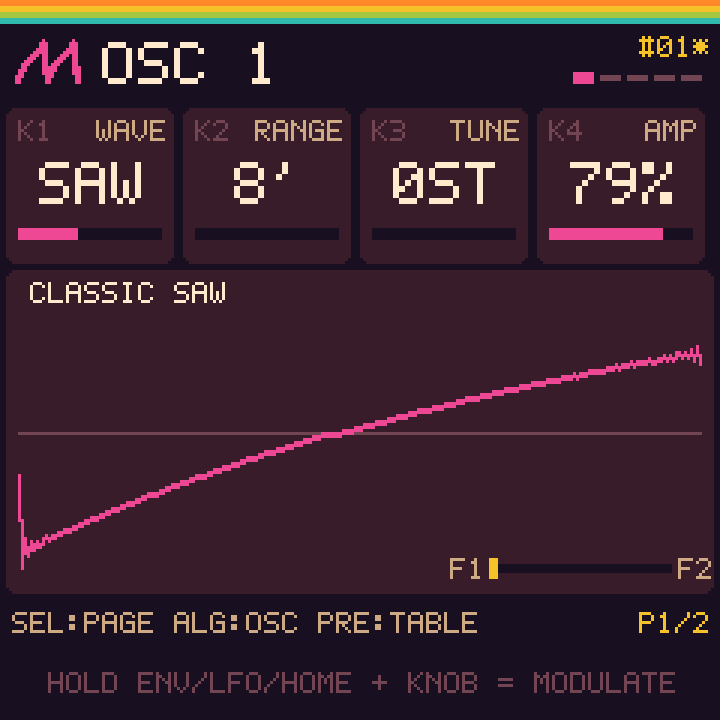
Colours follow the parts of the synth: teal envelopes, avocado modulators 5-8, orange macros, magenta the selected item.
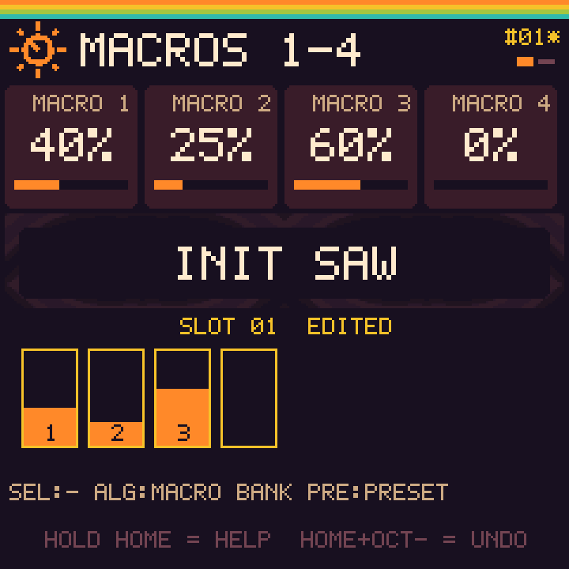
Factory sounds: slot 1 INIT SAW, 2 WIDE TABLE PAD, 3 GROWL BASS, 4 FORMANT PLUCK, 5 ORGAN LEAD, 6 ACID LINE (made for the step sequencer). Empty slots load the INIT sound. Your edits are kept through a power cycle: the FM-1 autosaves the current sound two seconds after you stop turning.
On HOME, KNOB1-KNOB4 are macros 1-4. Tap HOME again (or turn ALGORITHM) for macros 5-8.
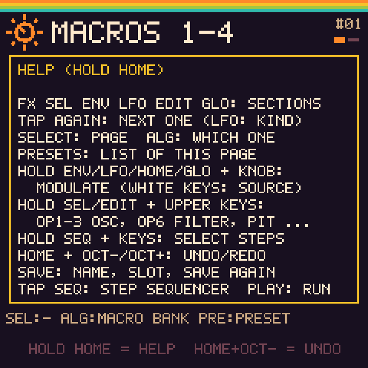
Hold HOME on its own for 0.7 seconds: the help card lists every gesture. Let go to close it.
The upper key row still carries the stock legends. With SEL or EDIT held they mean:
| OP1 OP2 OP3 | OSC 1, OSC 2, OSC 3 |
| OP4 / OP5 | MOD OSC / NOISE |
| OP6 | FILTERS |
| PIT / GLO | PITCH page / VOICE page |
| MONO / POLY | set the voice mode |
| last (unlabelled) | MACROS (HOME) |
Every page works the same way: the section button opens it, ALGORITHM picks which one, SELECT picks the page, KNOB1-4 change the four tiles, PRESETS picks from the page's list.
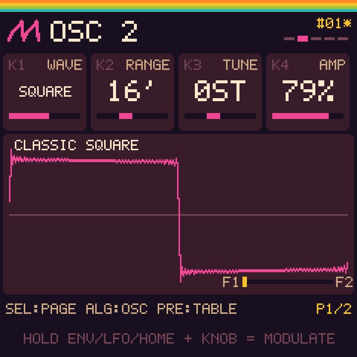
Press EDIT; tap again for OSC 2, OSC 3, MOD OSC, NOISE.
| Page | K1 | K2 | K3 | K4 |
|---|---|---|---|---|
| OSC P1 | WAVE | RANGE | TUNE | AMP |
| OSC P2 | FINE | INTENS | ROUTE | ON |
| MOD OSC P1 | PITCH | RING | PHASE | POS |
| MOD OSC P2 | RING TO | PHASE TO | POS TO | FM TO |
| MOD OSC P3 | FLT FM | |||
| NOISE | COLOR | AMP | ROUTE |
WAVE steps through the eight classic shapes; RANGE moves in octaves (footage), TUNE in semitones. To hear OSC 2 or 3, set ON on page 2. PRESETS on an oscillator page = the table (keep CLASSIC on the FM-1, see chapter 3).
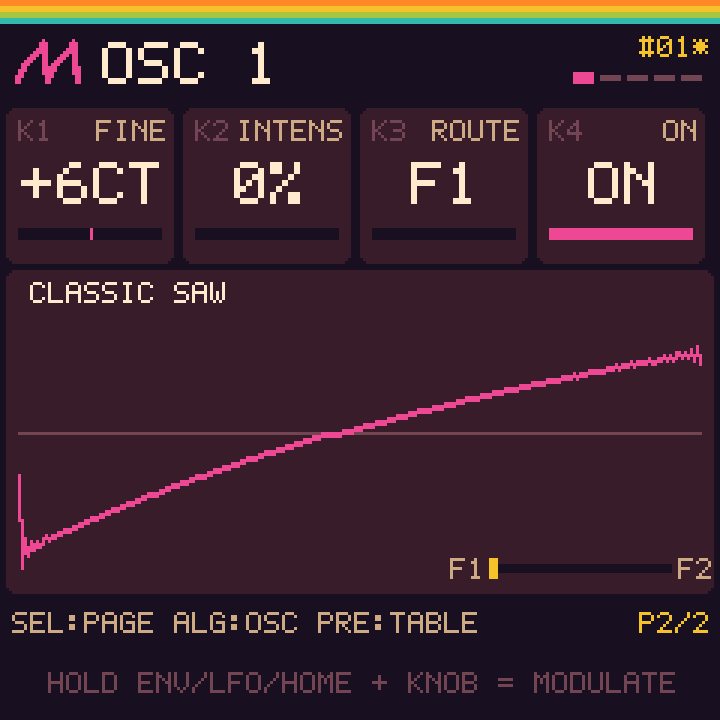
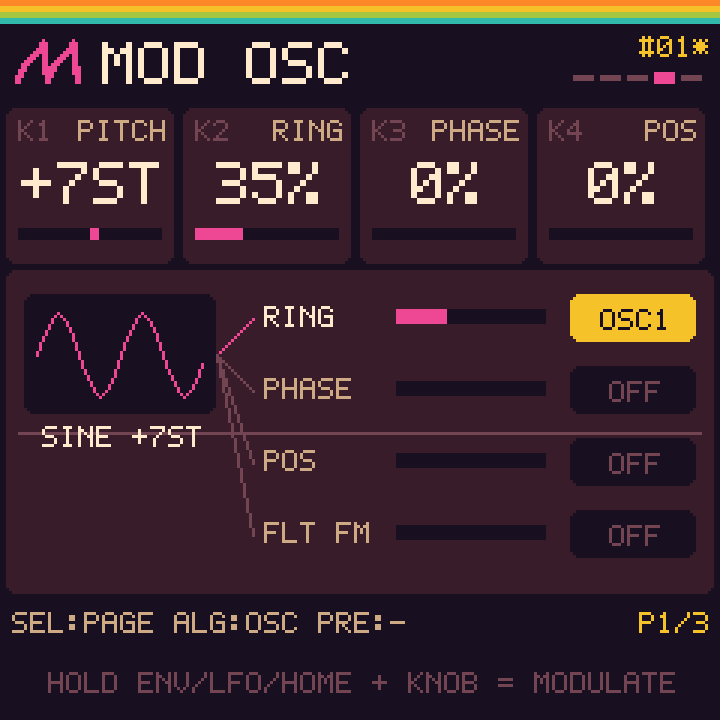
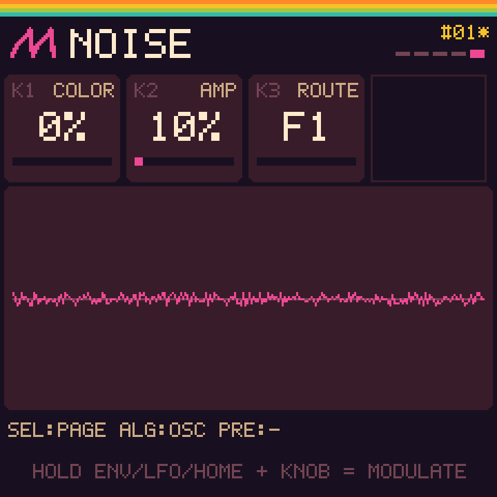
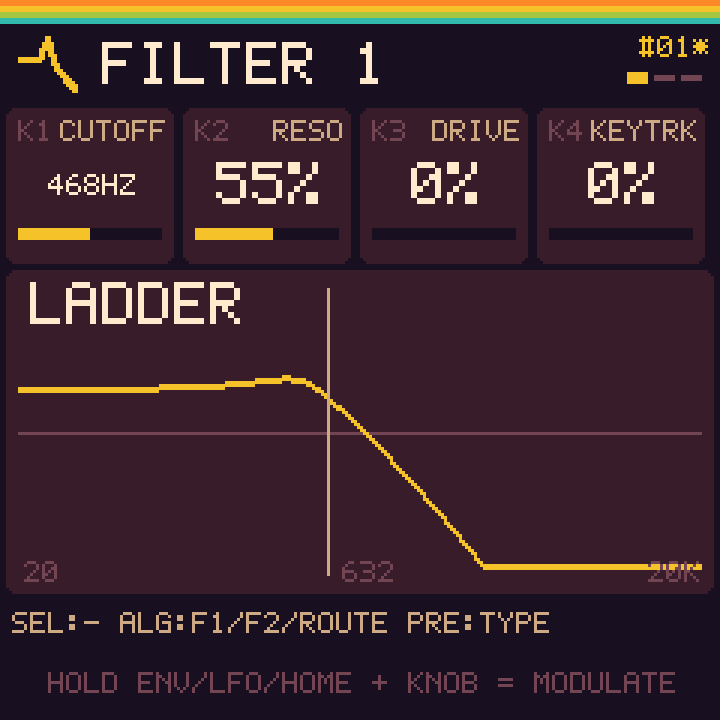
Press SEL: FILTER 1; tap again for FILTER 2, then ROUTING.
| Page | K1 | K2 | K3 | K4 |
|---|---|---|---|---|
| FILTER 1 / 2 | CUTOFF | RESO | DRIVE | KEYTRK |
| ROUTING P1 | SER/PAR | F1 MIX | F2 MIX | |
| ROUTING P2 | OSC1 | OSC2 | OSC3 | NOISE |
PRESETS on a filter page picks the type, in this order: LP2, LP4, LADDER, ACID, HP, BP, NOTCH, OFF. The curve on screen is a guide to the filter's shape, not an exact measurement.
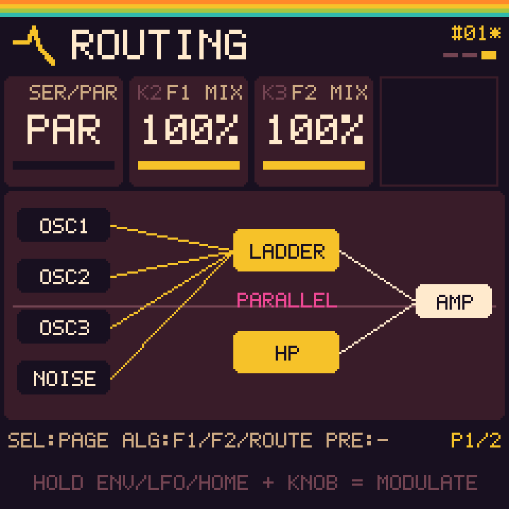
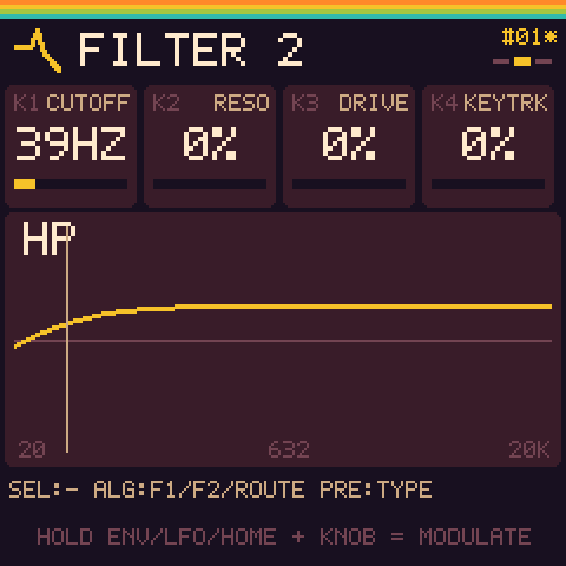
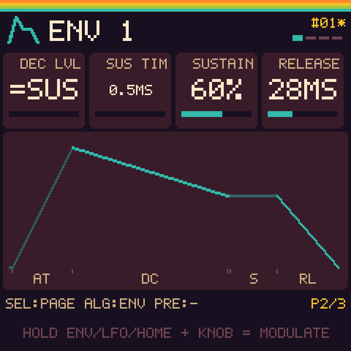
Press ENV; tap again (or turn ALGORITHM) for ENV 2, 3, 4. ENV 4 is labelled AMP ENVELOPE.
| Page | K1 | K2 | K3 | K4 |
|---|---|---|---|---|
| P1 | DELAY | ATTACK | ATT LVL | DECAY |
| P2 | DEC LVL | SUS TIM | SUSTAIN | RELEASE |
| P3 | LOOP |
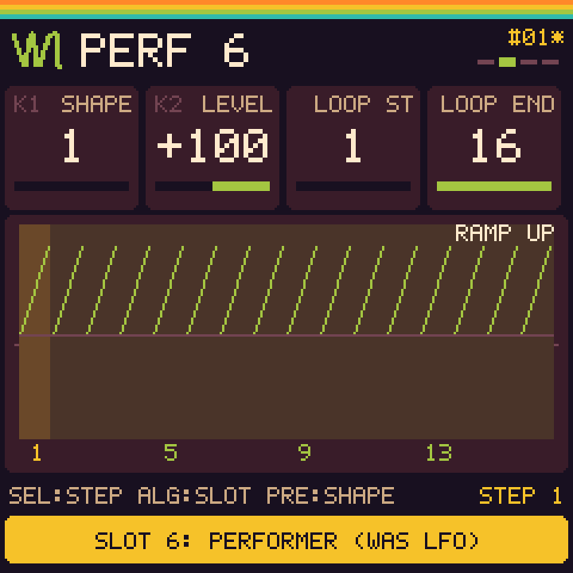
ALGORITHM picks the slot (5-8). The kind is set by quick taps on LFO (gaps under 0.4 s):
| 1 tap | LFO |
| 2 taps | PERFORMER |
| 3 taps | STEPPER |
| 4 taps | back to LFO |
| Kind | K1 | K2 | K3 | K4 | SELECT | PRESETS |
|---|---|---|---|---|---|---|
| LFO P1 | RATE | WAVE | PHASE | SYNC | page | wave |
| LFO P2 | KEYSYNC | UNIPOL | ||||
| PERFORMER | SHAPE | LEVEL | LOOP ST | LOOP END | step 1-16, then TIMING | shape library |
| STEPPER | VALUE | GLIDE | LOOP ST | LOOP END | step 1-16, then TIMING | pattern |
| TIMING page | RATE | SYNC | KEYSYNC | UNIPOL |
Each new SEQ hold starts a new selection. Turning ALGORITHM clears it. On the Stepper, PRESETS stamps one of four ready-made patterns onto all 16 steps.
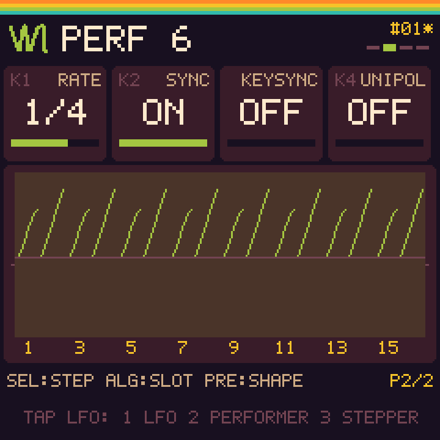
Press FX; turn ALGORITHM (or tap FX again) to move along the chain. The graph shows the chain with each effect's amount as a bar. BBD ECHO and OIL CAN have a second page (SELECT) with SYNC: when it is on, TIME on page 1 steps through note values (see "Echoes in time", chapter 7).
| Effect | K1 | K2 | K3 | K4 | Page 2 |
|---|---|---|---|---|---|
| OCT FUZZ | AMOUNT | OCTAVE | TONE | LEVEL | |
| TAPE | DRIVE | TONE | LEVEL | WOW | |
| ENSEMBLE | MODE | MIX | VIB RATE | VIB DPTH | |
| BBD ECHO | MIX | TIME | FEEDBK | MOD | TONE, SYNC |
| OIL CAN | MIX | TIME | FEEDBK | WARBLE | SMEAR, SYNC |
| REVERB | TYPE | AMOUNT | HOLD |
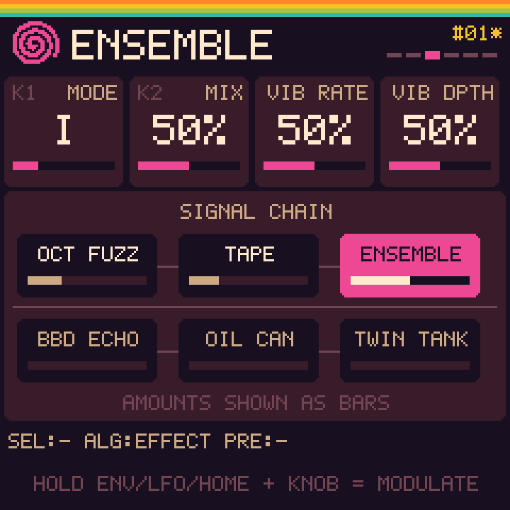
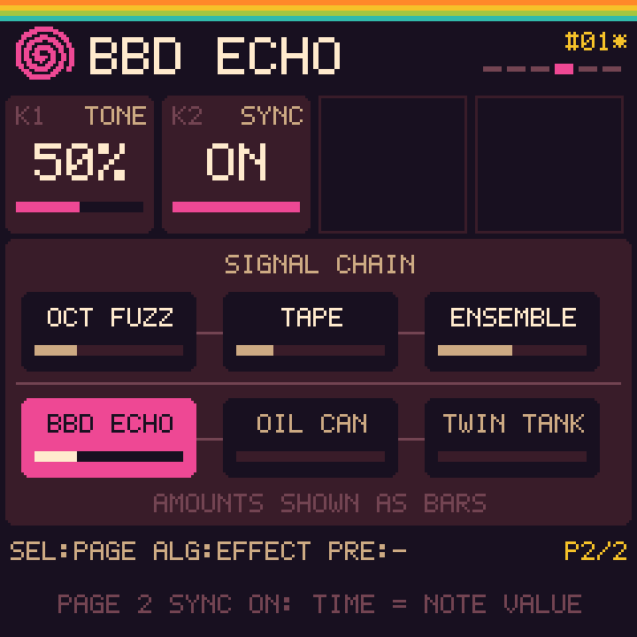
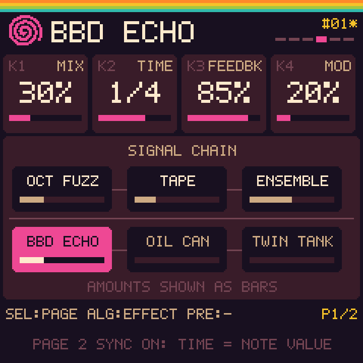
Press GLO for VOICE; tap again for PITCH, then MATRIX.
| Page | K1 | K2 | K3 | K4 |
|---|---|---|---|---|
| VOICE | MODE (POLY, MONO, LEGATO) | VOICES (1-8) | VEL (0-127) | MASTER (×0-×4) |
| PITCH | GLIDE | BEND (0-24 st) | TEMPO (40-240 BPM) | |
| MATRIX | SOURCE | TARGET | DEPTH |
On MATRIX, SELECT moves through the 16 routing rows; KNOB1-3 edit the highlighted one. TEMPO belongs to the instrument, not to the sound: it is the step sequencer's tempo and is saved with the patterns (SAVE on the sequencer page).
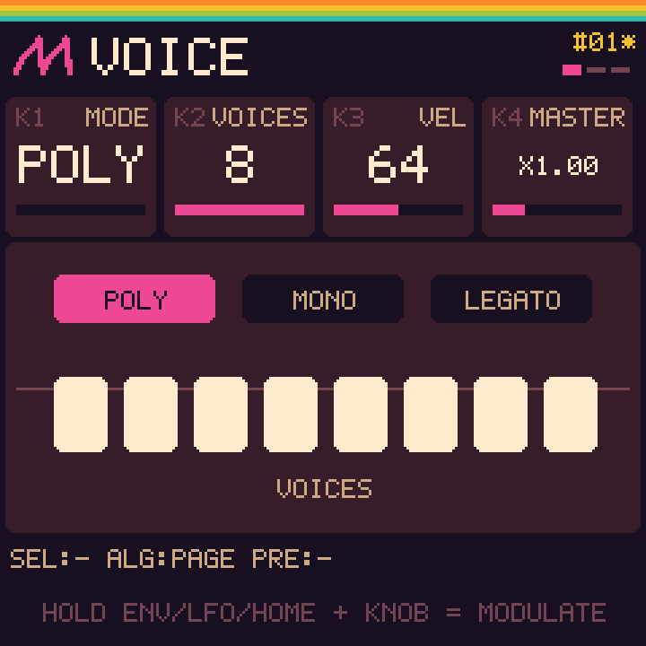
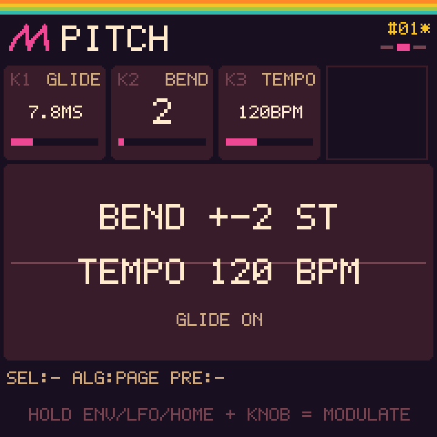
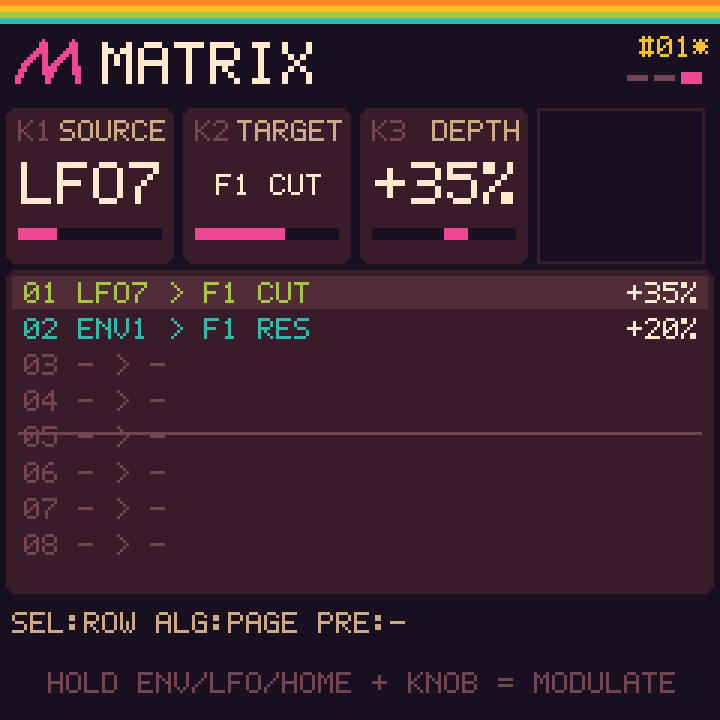
On a computer you would drag a modulator onto a knob. On the FM-1 you hold the source button and turn the knob.
Oscillator WAVE, RANGE, TUNE, AMP, FINE and INTENS; noise AMP; filter CUTOFF and RESO; SER/PAR; the RATE of slots 5 and 6; TAPE DRIVE; VOICE MASTER. Other knobs say ... : NO MOD TARGET. PAN and the global PITCH destination are reachable in the MATRIX. All 16 slots in use: ALL 16 MOD SLOTS USED.
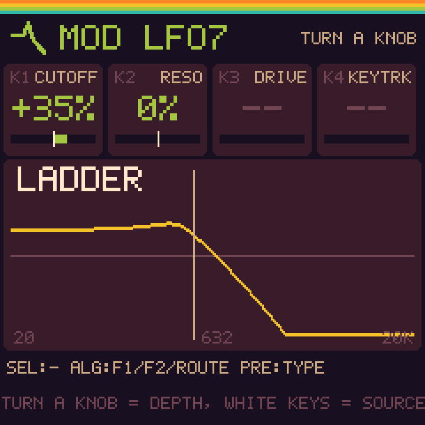
The MATRIX (GLO, tap twice) now lists LFO7 > F1 CUT +35%. The matrix calls slots 5-8 LFO5-LFO8 whatever their kind.
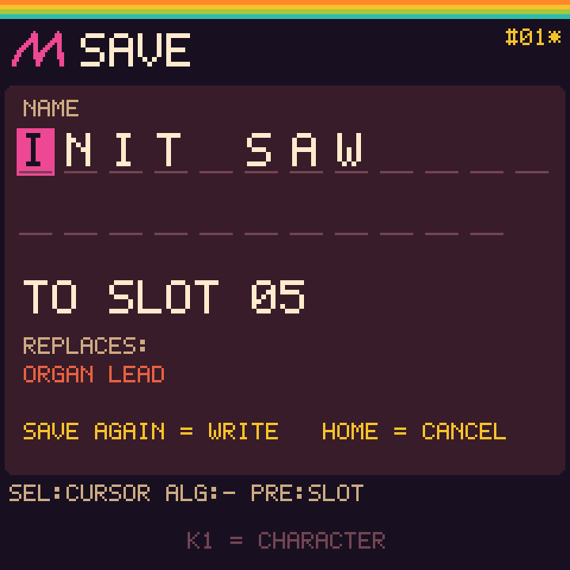
To leave without saving, press HOME.
There are 64 slots in eight banks. Each bank is stored twice on the FM-1's flash, and the new copy only counts once it is complete, so a power cut during a save cannot destroy the old sound. If the flash write fails, the message is FLASH ERROR.
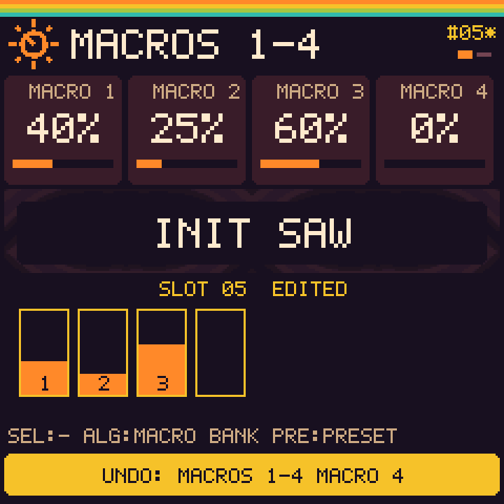
A mono step sequencer in the style of the classic bassline boxes: up to 64 steps, each with a note, a gate length, accent and slide. Eight patterns, swing, and MIDI clock in and out.
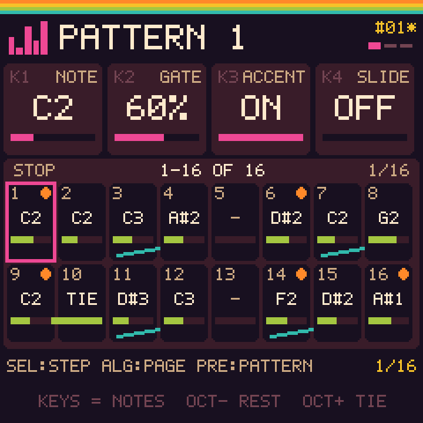
Tap SEQ again (or turn ALGORITHM) for the next page: STEP → PATTERN → CLOCK. Holding SEQ on a Performer or Stepper page still selects that modulator's steps; it does not open the sequencer.
| Cells | Two rows of eight: the 16 steps around the cursor (1-16, 17-32 ...). Each shows its number and note, - for a rest or TIE. |
| Marks | Green bar = gate length; orange mark = accent; teal ramp into the next cell = slide. |
| Colours | The playing step is filled mustard; the cursor has a magenta frame. The white-key lights show the playing step and blink the cursor. |
| Status line | STOP, PLAY or WAIT CLOCK, plus REC; the step range and length (1-16 OF 16); the rate, with MIDI when following MIDI clock. |
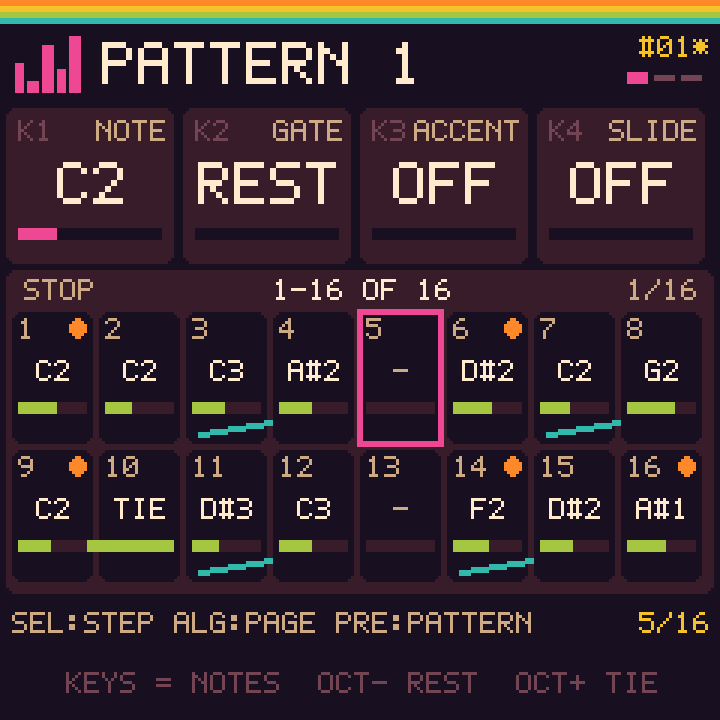
| Page | K1 | K2 | K3 | K4 |
|---|---|---|---|---|
| STEP | NOTE (semitones) | GATE: REST, 5-100 %, TIE | ACCENT on/off | SLIDE on/off |
| PATTERN | LENGTH 1-64 | RATE 1/32, 1/16, 1/8 | SWING 50-75 % | TEMPO 40-240 BPM |
| CLOCK | CLK IN: AUTO / OFF | CLK OUT: OFF / ON |
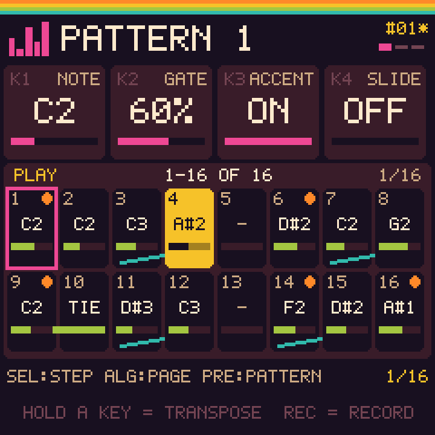
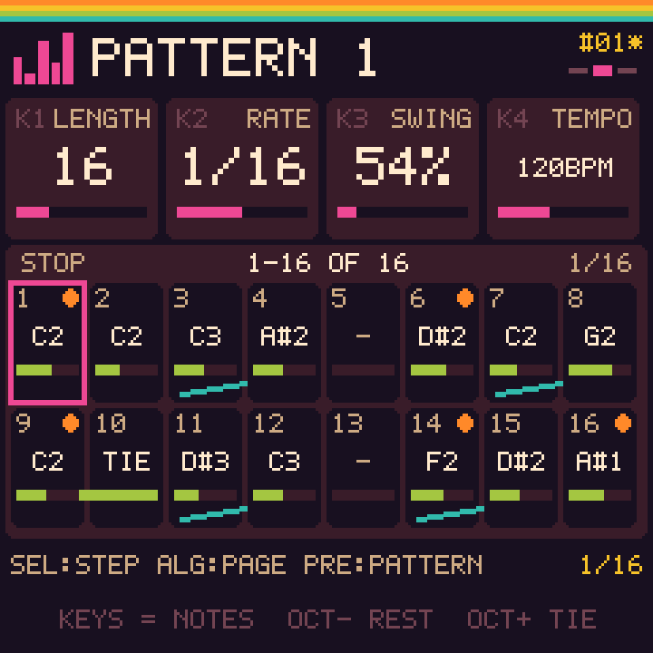
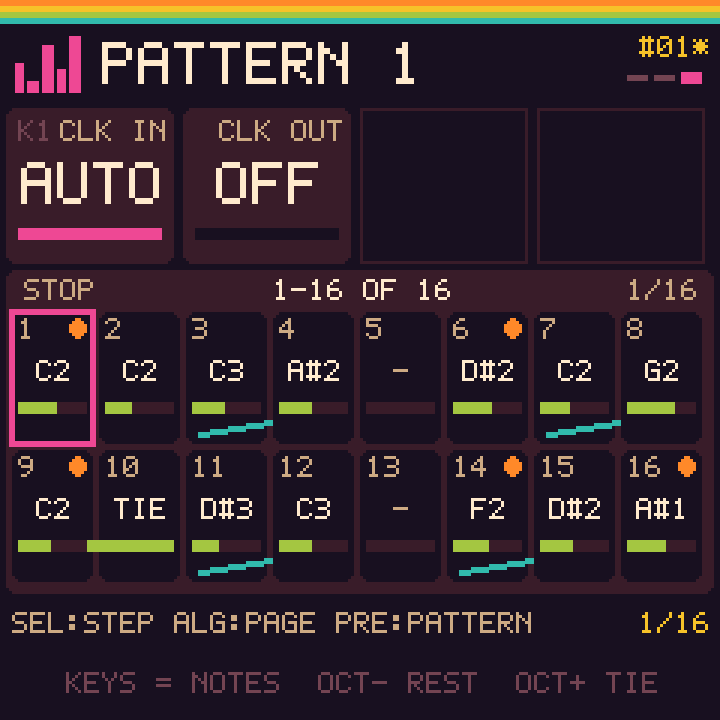
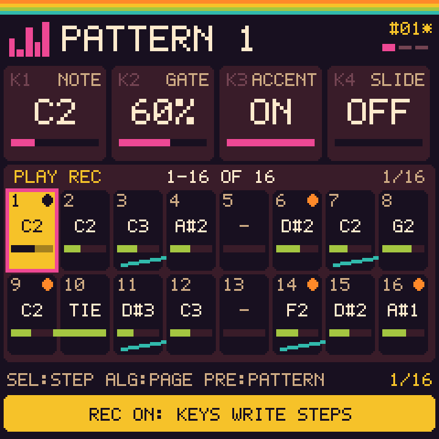
On the sequencer page, press SAVE: all 8 patterns, the tempo and the clock settings are written (PATTERNS SAVED). They are not saved with the sound, and the sound is not saved here. The encoder line shows * after the step counter while patterns have unsaved changes. Hold HOME on the sequencer page for its own help card. The ARP button is not used yet.
The same engine with a full-size panel: everything on one screen in a 1970s analogue dress, a touch keyboard with wheels, and room for 16 voices.
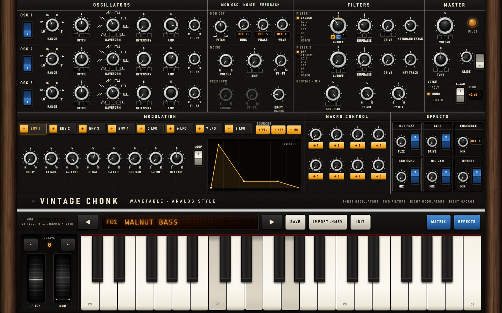
The app is a single APK file, built by android/build.ps1. It needs Android 8.0 or newer and runs in landscape.
adb install -r followed by the path of the APK file.android/tablet_setup.ps1 was written for one particular Fire HD 10. Besides installing the app it
uninstalls other apps and disables Amazon apps. Do not run it on your tablet unless that is exactly what you want; it has a -DryRun option to see what it would do.| Section | Controls |
|---|---|
| OSCILLATORS | OSC 1-3 rows: on/off rocker, RANGE (LO, 32', 16', 8', 4', 2'), PITCH (−7 to +7 semitones), WAVEFORM (eight icons), INTENSITY, AMP, F1 · F2 route. |
| MOD OSC · NOISE · FEEDBACK | MOD OSC: PITCH (±48), RING, PHASE, WAVE, each with a target chip (tap: OFF, OSC 1, OSC 2, OSC 3). NOISE: COLOUR, AMP, F1 · F2. FEEDBACK is greyed out (not in this engine yet). DRIFT (ANALOG). |
| FILTERS | FILTER 1 type list (LADDER, ACID, LP4, LP2, HP, BP, NOTCH) and FILTER 2 (the same with OFF); CUTOFF, EMPHASIS, DRIVE, KEYBOARD TRACK / KEY TRACK. ROUTING · MIX: SER · PAR, F1 MIX, F2 MIX. |
| MASTER | VOLUME, PILOT lamp (glows with the voices playing), TUNE, GLIDE knob and rocker, VOICE (POLY / MONO / LEGATO), A-440 rocker (holds an A for tuning), BEND chip (±1 to ±24). |
| MODULATION | Eight tabs: ENV 1-4, then 5-8 labelled with their kind (LFO, PERF, STEP). The pane below edits the selected tab. |
| MACRO CONTROL | Eight macro knobs, each with a ✛ handle and the name of its first destination. |
| EFFECTS | One mini unit per effect, with its main knob and an on/off rocker (ENSEMBLE: a mode chip). Tap a unit's title for the full EFFECTS overlay. |
| Strip | MIDI light, 8 voice lights, audio info, ◀ preset display ▶, SAVE, IMPORT .NMSV, INIT, MATRIX, EFFECTS. |
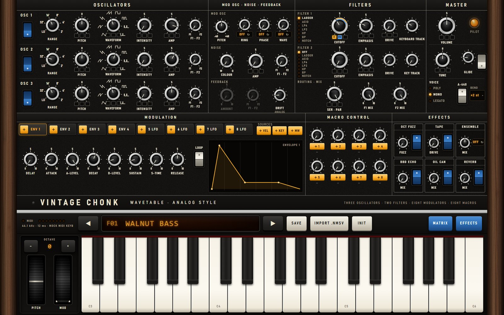
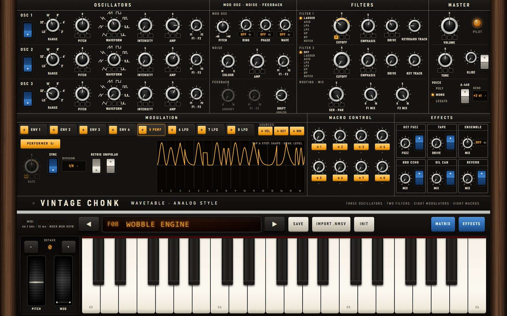
Factory sounds: Walnut Bass, Copper Lead, Brass Section, Velvet Pad, Glass Pluck, Acid Line, Sync Sweeper, Wobble Engine, Step Arpeggio, Parlour Keys, Iron Bell, Thunder Kick, Rubber Funk, Silk Strings, Night Wind, Hollow Stab.
Each knob takes up to three sources; a sound has 16 routings in all. Knobs that accept modulation: TUNE; oscillator PITCH, WAVEFORM, INTENSITY, AMP; noise AMP; both CUTOFFs and EMPHASISes; SER · PAR; FILTER 1 DRIVE; VOLUME; the RATE of slots 5 and 6.
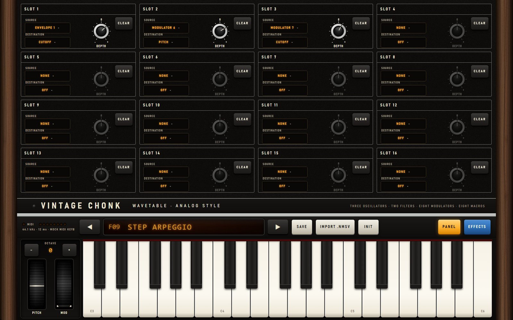
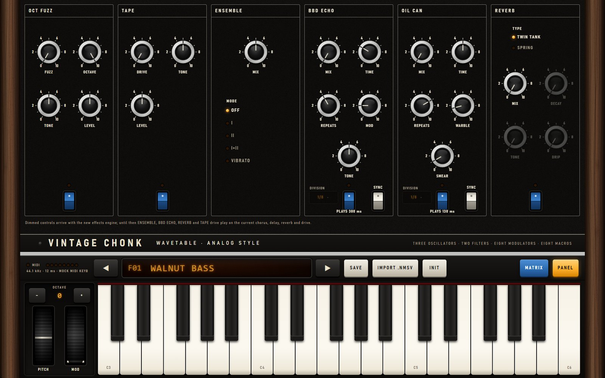
The VST3 plugin and the standalone app, and ORBIT, the second engine: three layers of sound combined with impulses along five dimensions, and blended by a moving puck.
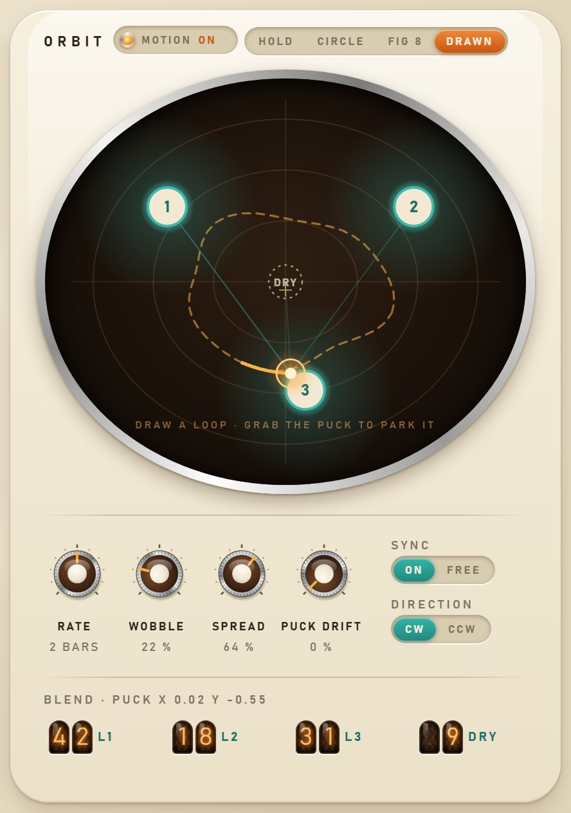
On Windows, Atomic Lounge is a VST3 instrument for your DAW and a standalone app. Both have two engines: REGOLITH, the synthesizer described in Part 1, and ORBIT, the poly-convolution engine of the next chapters.
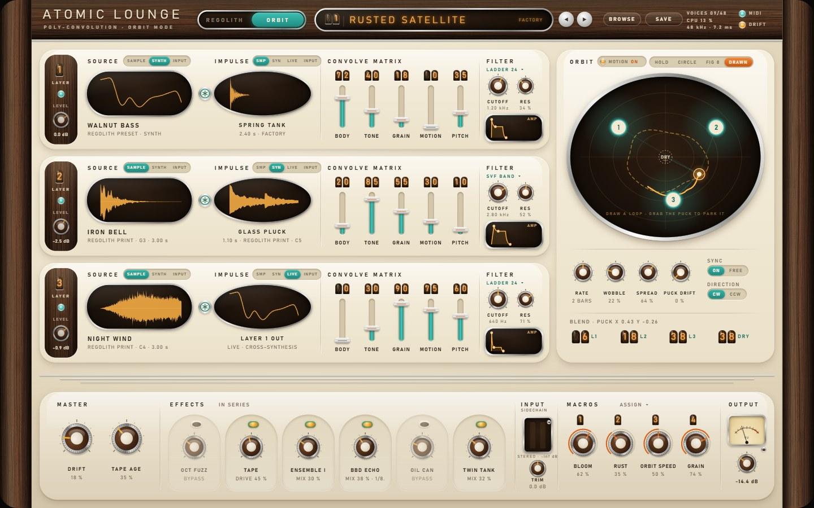
| File | What it is |
|---|---|
| Atomic Lounge.vst3 | The VST3 plugin (a folder). For any DAW that loads VST3 instruments on Windows 10 or 11 (64-bit). |
| Atomic Lounge.exe | The standalone app: the same instrument in its own window, no DAW needed. |
| Atomic-Lounge-User-Guide.pdf | This guide. |
| LICENSE, RELEASE-NOTES.txt | The licence (AGPL-3.0) and what is new in this version. The checksums of the download are in RELEASE.txt next to it on the release page. |
Atomic Lounge.vst3 folder into C:\Program Files\Common Files\VST3\ (Windows asks for administrator rights), then let your DAW rescan its plugins. Atomic Lounge appears as an instrument by Atomic Lounge.
If you installed an earlier build as Vintage Chonk.vst3, delete that folder: the new one replaces it, and projects that used it find the new
one (the plugin's identity is unchanged), with their sound as it was.Atomic Lounge.exe anywhere and double-click it. Click Options at the top of its window, choose Audio/MIDI Settings, and pick your audio output and your MIDI keyboard. The app remembers them.%LOCALAPPDATA%\Atomic Lounge\WebView2\<program name>, so the standalone app and a DAW
can show their panels at the same time. If WebView2 cannot start, the window says why, with an error code, and offers Retry;
if it says the runtime is missing, install the "WebView2 Runtime" from Microsoft.The switch REGOLITH | ORBIT sits in the header of the ORBIT panel and in the foot bar of the REGOLITH panel. Switching cross-fades the two engines in 30 ms, so it can be done while you play. The mode is saved with your project. Projects saved with Vintage Chonk 1.0.0 open in REGOLITH mode, and projects saved with 1.1.0 open in the mode they were saved in (CHONK is now called REGOLITH), and all of them sound exactly as before.
| REGOLITH | ORBIT | |
|---|---|---|
| What it is | The synthesizer of Part 1: 3 oscillators, 2 filters, 4 envelopes, 4 modulators, 8 macros | Three layers of samples, REGOLITH synths or live input, each combined with an impulse, blended on the orbit field |
| Host programs | 1-16: the 16 factory presets | 17-24: "ORBIT - RUSTED SATELLITE" to "ORBIT - THREE-BODY ORBIT"; 25 and up: the 1.2.0 presets (chapter 24) |
| Automation | 22 parameters (macros, master, filters, mod osc, effects, glide) | Parameters named "ORBIT ...": puck X/Y, rate, wobble, spread, drift, tape age, output, per layer level, BODY, TONE, GRAIN, MOTION, PITCH, cutoff, resonance, the six effects, macros 1-4; new in 1.2.0: motion on/off, puck drift, input trim, and per layer source input, impulse input and input gate |
| Latency at 48 kHz | 104 samples (2.2 ms) | 347 samples (7.2 ms) |
| Effects | The same six: OCT FUZZ, TAPE, ENSEMBLE, BBD ECHO, OIL CAN, TWIN TANK / SPRING (chapter 7) | |
Choosing one of the programs 17 and up in your DAW's program list switches to ORBIT and loads that preset; choosing 1-16 switches back to REGOLITH. Both modes keep their own sound while the other one plays, so you can go back and forth.
ORBIT makes new sounds by letting one sound take on qualities of another. You play a source; ORBIT combines it with an impulse; and you choose which qualities cross over: the room it rings in, its colour, its texture, its rhythm or its overtones. Three such layers are blended by a puck that moves around a field.
This is poly-convolution and cross-synthesis: well-known signal-processing techniques, put together here as an original design. Classic convolution (how convolution reverbs work) is one of the five dimensions; the other four split it into separate qualities you can dial in on their own.
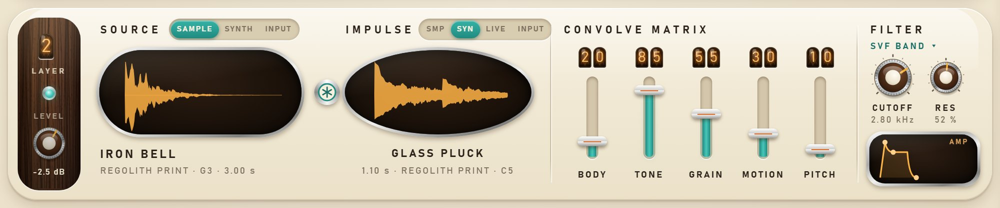
| Part | What it does |
|---|---|
| LAYER | Its number, a lamp that lights while it sounds, and LEVEL. |
| SOURCE | What you play. SAMPLE, SYNTH or INPUT (the live sidechain audio, chapter 27). Click the window or the name for the source inspector. |
| IMPULSE | What the source is combined with. SMP (a sample or a generated impulse), SYN (a REGOLITH sound printed as an impulse), LIVE (another layer, as it plays) or INPUT (the live sidechain audio). Click it for the impulse inspector. |
| CONVOLVE MATRIX | Five sliders, BODY, TONE, GRAIN, MOTION and PITCH, with nixie readouts (chapter 21). |
| FILTER | Click the type for LADDER 24, SVF LOW, SVF BAND, SVF HIGH or off; CUTOFF, RES. Below, the envelope window: drag the points of the AMP envelope; click its tag for the FILTER envelope. |
The impulse inspector shapes the impulse: START, LENGTH (up to 6 s), PITCH, DAMP (darker), DECAY (shorter or longer tail), AGE (worn tape), BODY GAIN, REVERSE and KEYTRACK, and how TONE, GRAIN and PITCH read it (next chapter).
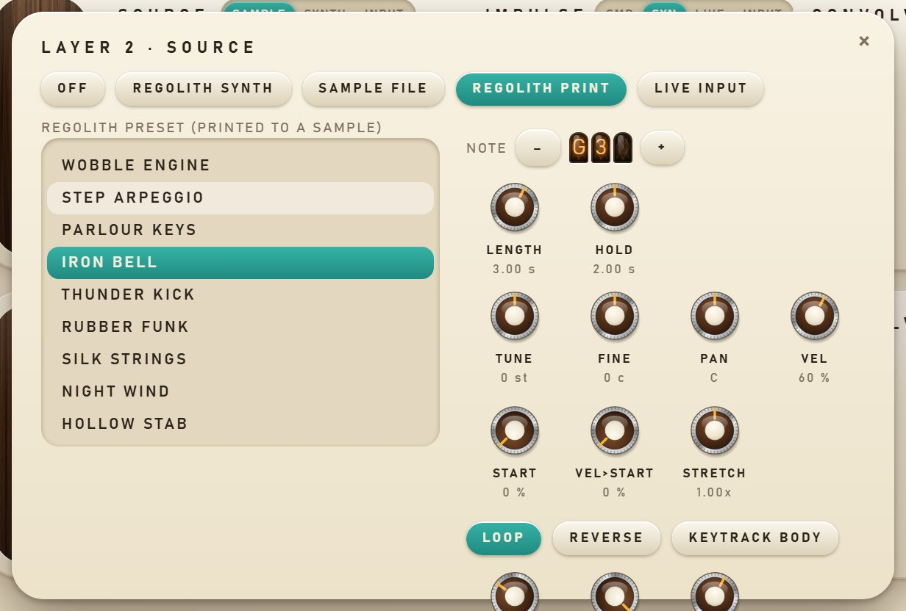
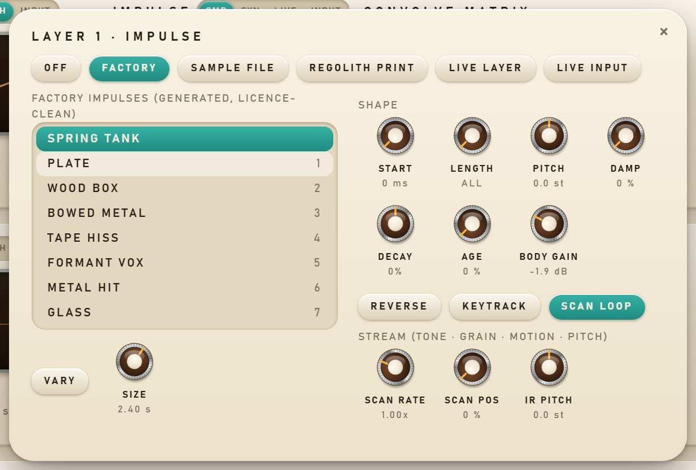
Each layer's CONVOLVE MATRIX has five sliders. Each one lets a different quality of the impulse cross over into the source. At 0 that quality is left alone; all five at 0 is the plain source. Mix them: that is where ORBIT's sounds are.
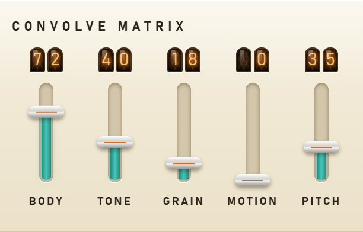
| Slider | What crosses over |
|---|---|
| BODY | The whole impulse: its resonance, space and smear. True convolution. |
| TONE | Only its colour (EQ, formants). The source keeps its own waveform. |
| GRAIN | Only its texture (noise, roughness, fine detail). The source keeps its colour. |
| MOTION | Its loudness shape and its hits: rhythm, swells, chops. |
| PITCH | Its overtones, re-tuned to the note you play. |
| Dimension | Try this | What you hear |
|---|---|---|
| BODY | A pad, impulse SPRING TANK, BODY 80 | The pad played inside a spring reverb tank: it rings, splashes and wobbles. With WOOD BOX, a pluck becomes a marimba bar on a hollow box. |
| TONE | A string pad, impulse FORMANT VOX, TONE 90 | The strings sing "aah" and "ooh": they keep their notes and their bite, but take the voice's colour. Like an EQ that copies another sound and keeps moving with it. |
| GRAIN | A soft pad, impulse TAPE HISS or METAL HIT, GRAIN 60 | The pad's surface turns breathy or rusty, while its brightness stays where it was. |
| MOTION | A held chord, impulse METAL HIT, MOTION 75 | The chord is chopped and pumped by the hits' rhythm. With BOWED METAL it swells and breathes instead. |
| PITCH | A pad, impulse GLASS, PITCH 60 | A glassy shimmer on top that follows your chords in tune: the glass's overtones moved onto your notes. |
BODY uses the whole impulse at once. TONE, GRAIN and PITCH instead read the impulse as a stream that moves while you hold a note: SCAN RATE sets how fast (0 freezes it at SCAN POS), SCAN LOOP starts it again at the end, and IR PITCH plays the stream higher or lower. A slow scan through a long impulse makes a sound that keeps changing; a frozen scan makes a still, held colour.
Normally the impulse sounds at one pitch for every note. With KEYTRACK on (in the impulse inspector, or KEYTRACK BODY on a sample source), each note gets its own copy of the impulse tuned to that note, so a wood box or a bell body is in tune all over the keyboard. It costs more processing, so use it where pitch matters.
The round screen on the right decides how much of each layer you hear. It has four nodes, 1, 2, 3 and DRY, and a glowing puck. The closer the puck is to a node, the more of that layer you hear. Move the puck and the sound morphs.
| Path | What the puck does | On the field |
|---|---|---|
| MOTION OFF | Stays exactly where you put it. | Click or drag to place it. |
| CIRCLE | Goes round in a circle. | Drag to move the circle; SPREAD sets its size. |
| FIG 8 | Traces a figure of eight: it visits two sides in turn. | Drag to move it. |
| DRAWN | Follows a loop you draw. | Drag on the screen to draw. |
A loop that hugs one node and then swings past the others gives a sound that rests, then wanders. A small loop near the middle gives gentle, constant motion.
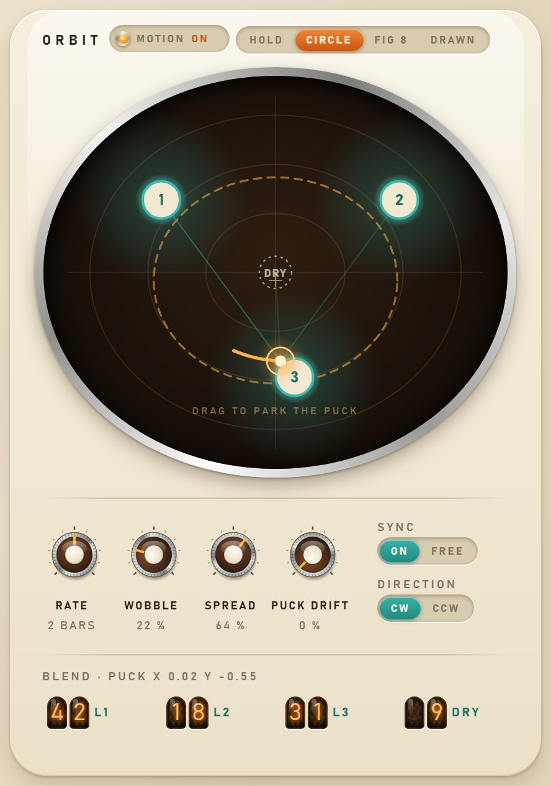
The orbit does not have to move. With MOTION OFF the puck stays exactly where you put it and the blend of the four nodes is fixed: a steady sound you can still play and shape with the matrix, the filters and the macros. New patches start this way, held at a sensible point between the nodes.
Almost every knob and slider in ORBIT can be moved by a modulation source: matrix amounts, levels, filters, the puck, the orbit's rate, wobble and spread, the impulse scan, drift and more.
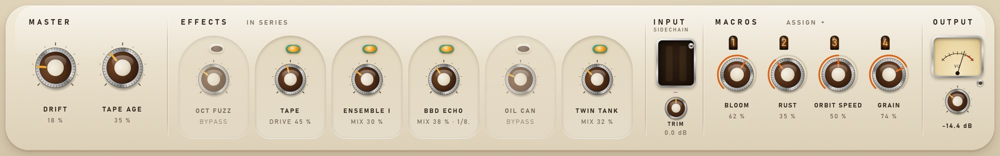
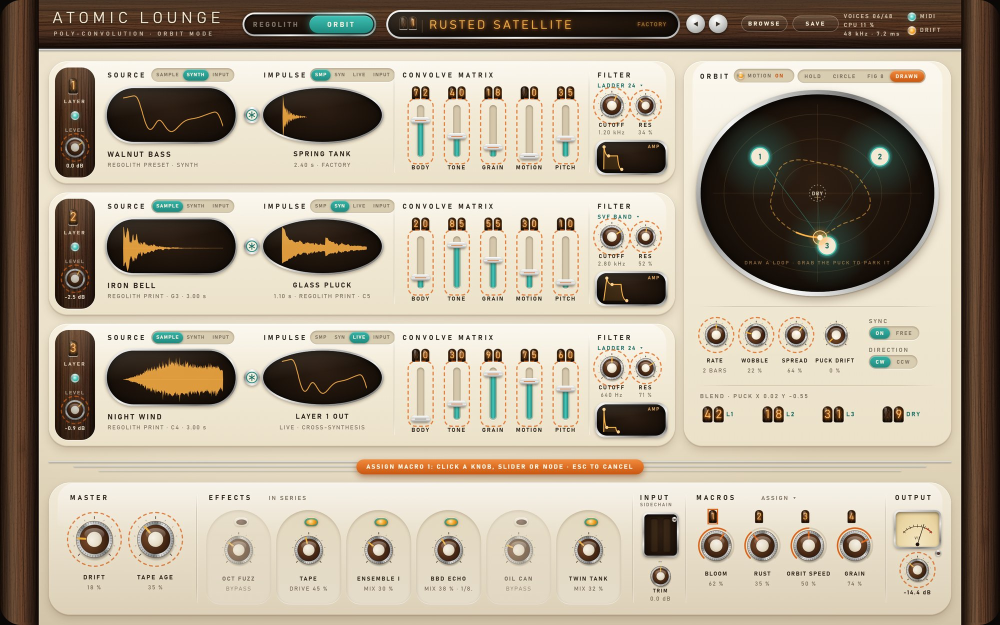
Macros 1-4 are also host parameters (ORBIT Macro 1-4), so a DAW controller or automation can play them.
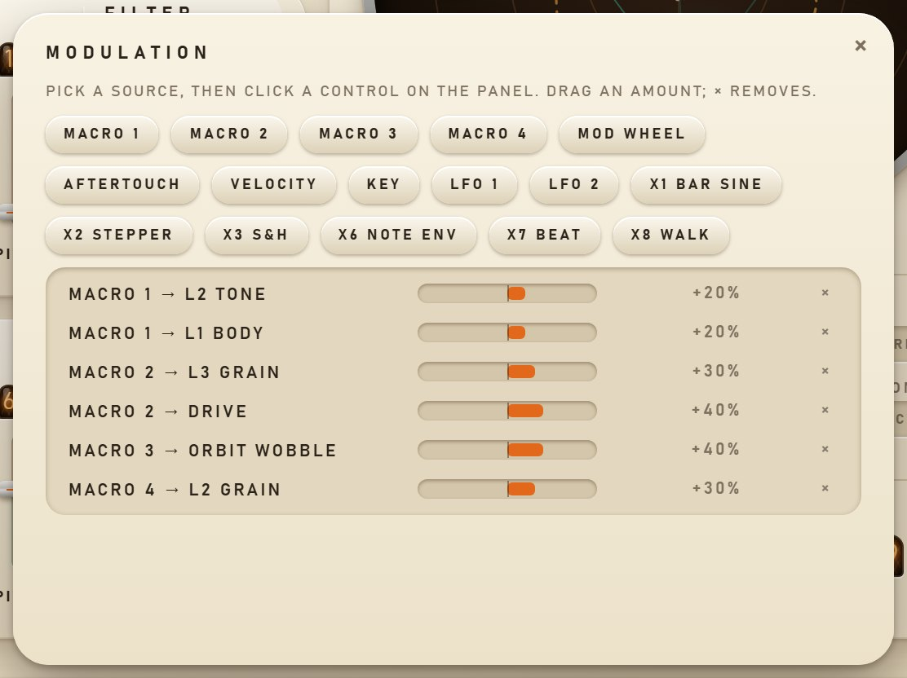
Click ASSIGN ▾ for every routing of the sound (up to 32). Drag a routing's bar left or right to set its amount (−100 % to +100 %); × removes it. The buttons on top pick any source; then click a control on the panel.
| MACRO 1-4 | the four macro knobs |
| MOD WHEEL, AFTERTOUCH | from your keyboard |
| VELOCITY, NOTE | of the last note played |
| LFO 1, LFO 2 | slow internal sine waves |
| EXT1 BAR SINE | a sine wave one bar long, in time with the host |
| EXT2 STEPPER | 16th-note accents, in time |
| EXT3 S&H | a new random value every 8th note |
| EXT6 NOTE ENV | an envelope started by each note |
| EXT7 BEAT | a ramp that rises over each beat |
| EXT8 WALK | a slow random walk |
The factory presets show what ORBIT does. They are made only from the generated impulses and REGOLITH sounds (and, in the INPUT presets, whatever you feed them), and their levels are matched: each sits near the same loudness and peaks below −1 dBFS. Open them with BROWSE (or the name), step with ◀ ▶, or pick programs 17 and up in your DAW.
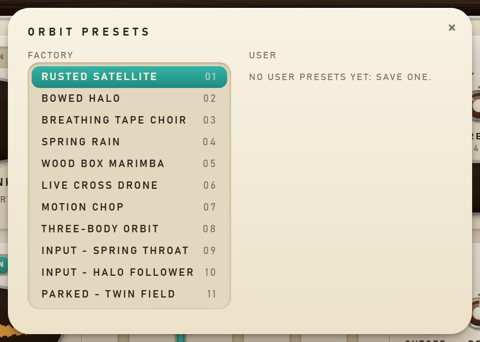
SAVE asks for a name and stores the preset in %APPDATA%\Atomic Lounge\orbit, with its samples inside it (up to 24 MB
each). Your presets appear under USER in the browser; × deletes one. Presets saved by earlier versions in
%APPDATA%\Vintage Chonk\orbit are still found while the new folder does not exist; nothing is moved or deleted.
| Preset | What it is | Macros |
|---|---|---|
| RUSTED SATELLITE | Walnut Bass inside a spring tank; an Iron Bell print on tape, coloured and roughened by a Glass Pluck; a Night Wind choir crossed LIVE with the bass. A drawn loop over two bars. | BLOOM, RUST, ORBIT SPEED, GRAIN |
| BOWED HALO | Velvet Pad in bowed metal, Silk Strings with a glass shimmer (PITCH). A slow circle over eight bars. | SHIMMER, METAL, DARK, WOBBLE |
| BREATHING TAPE CHOIR | Two pads given voice colours by FORMANT VOX (TONE), plus a looped breath shaped by the voice. Figure of eight; the mod wheel adds grain. | BREATH, VOWEL |
| SPRING RAIN | Bell drops in a spring tank, wind chopped into rain by metal hits (MOTION), a dark pad under them, spring reverb. Play single high notes. | STORM, SPRING |
| WOOD BOX MARIMBA | A Glass Pluck print struck inside a wood box, KEYTRACK on, so every note is in tune; a soft tine behind it. | HOLLOW |
| LIVE CROSS DRONE | Walnut Bass as the root; Silk Strings wearing the bass LIVE (TONE and GRAIN); iron air from bowed metal. A drawn loop over 16 bars; the random walk moves the bass filter. | CROSS |
| MOTION CHOP | A pad chopped by metal hits and 16th-note accents, a metal stab scanned in time with the beat, a dotted-eighth echo. | CHOP, GRIT |
| THREE-BODY ORBIT | Plate pad, glass strings an octave up (PITCH), a voiced wind (TONE). A circle over four bars between three evenly placed bodies. | GRAVITY, SPEED |
SPRING RAIN, WOOD BOX MARIMBA and MOTION CHOP hold the puck; RUSTED SATELLITE, BOWED HALO, BREATHING TAPE CHOIR, LIVE CROSS DRONE and THREE-BODY ORBIT are the moving showcases. These eight are unchanged from 1.1.0, so songs that use them sound the same.
The INPUT presets need audio on the sidechain input (chapter 27): with nothing fed they stay quiet or play only their synth layer. They and the other new presets hold the puck at a fixed blend; a macro moves it by hand.
| Preset | What it is | Macros |
|---|---|---|
| INPUT - SPRING THROAT | A REGOLITH synth layer whose BODY impulse is the live input: your drums, voice or guitar become the room the synth rings in, refreshed all the time. Held puck. | a macro sweeps the puck |
| INPUT - HALO FOLLOWER | The live input itself as a source (GATE THRU) inside a bowed-metal / plate body, with a pad layer that takes its colour (TONE) from the input. Held puck. | a macro sweeps the puck |
| Held-blend presets | New presets with the puck parked at a fixed blend, each with a macro on PUCK X / PUCK Y to move it by hand. | a macro on the puck |
Source samples have START, VEL>START (harder notes start later in the file), LOOP with LOOP IN, LOOP OUT and X-FADE, REVERSE, STRETCH (longer or shorter without changing pitch), and TAPE mode with WOW, FLUTTER, BUMP and HISS.
When you save your DAW project (or an ORBIT preset), every sample up to 24 MB is stored inside it, losslessly, together with its file path. The
project opens on another computer, or after the file was moved or deleted. The inspector says EMBEDDED IN THE PROJECT. Larger files are kept
by path only (TOO LARGE TO EMBED: KEPT BY PATH): keep them where they are. If a sample can be found neither inside the project nor at its path, the
layer shows MISSING and the rest of the sound still plays. Dropped files are also copied to %APPDATA%\Atomic Lounge\samples (files kept in the old %APPDATA%\Vintage Chonk\samples
folder by earlier versions are still found there).
TONE, GRAIN and PITCH analyse the sound in short slices, and the effects run at their own rate between two converters. Together that makes ORBIT 347 samples late at 48 kHz (about 7.2 ms). The plugin tells your DAW, which shifts the track back so it lines up with the rest of your song. REGOLITH mode is 104 samples (2.2 ms). For the live input, see chapter 27. The status in the header shows the voices, the CPU load and the latency.
Three layers with long impulses and all five dimensions use about 10-12 % of one processor core at 48 kHz. KEYTRACK on long impulses costs the most; SPREAD, RATE and the effects cost very little.
ORBIT sounds most alive when things move a little, all the time, and when the sounds you combine are not too alike.
ORBIT can take the sound of another track, live, and use it as a layer's source or as its impulse: a drum loop becomes the room a pad rings in, a voice colours a synth, a guitar is played through a spring made of your own sounds.
Atomic Lounge has one audio input, named Sidechain: input bus 0, a VST3 sidechain (aux) bus, stereo (mono is accepted: both sides get the same signal), switched on by default. Your DAW feeds it from another track. REGOLITH ignores it; in ORBIT it is a choice wherever a layer's source or impulse is picked.
| Where | Choose | What it does |
|---|---|---|
| SOURCE | INPUT, next to SAMPLE and SYNTH | The input is the layer's sound, through its matrix, filter and level. GATE THRU (default): it plays whenever audio arrives, notes or not. NOTE: notes open it, shaped by the layer's AMP envelope (and velocity). |
| IMPULSE | INPUT, next to SMP, SYN and LIVE | The input is what the source is combined with, in all five dimensions (below). |
| TRIM | -24 to +24 dB | The input level before ORBIT uses it, with a small INPUT meter beside it: check here first if nothing happens. |
As a source, the input comes out exactly as late as the plugin reports (347 samples, 7.2 ms at 48 kHz in ORBIT), and your DAW lines it up with the rest of the song. As a BODY impulse, a new body is captured every 140 ms; the newest sound on the input starts to fade into the body about 97 ms after it arrives (4672 samples at 48 kHz with the 250 ms window; 4992 with 1000 ms) and is at full weight 2048 samples later (about 140 ms). That is part of the effect (a body is always a stretch of what came before), not something the DAW can make up. As the TONE, GRAIN, PITCH or MOTION modulator the input lines up with the source within the analysis window.
Click Options, then Audio/MIDI Settings, and pick the input channels of your audio interface. The input starts muted, to avoid feedback through speakers: untick Mute audio input to let it in. Use headphones, or keep the microphone away from the speakers.
| Parameter | Values |
|---|---|
| ORBIT L1 / L2 / L3 Source Input | 1 = the layer's source is INPUT; 0 = its sample or synth again |
| ORBIT L1 / L2 / L3 Impulse Input | 1 = the layer's impulse is INPUT; 0 = its own impulse again |
| ORBIT L1 / L2 / L3 Input Gate | 0 = THRU, 1 = NOTE |
| ORBIT Input Trim | -24 to +24 dB (middle = 0 dB) |
Bringing in Massive presets, MIDI details, fixes for common problems, a one-page card of every FM-1 gesture, and the credits.
Atomic Lounge can read presets from the original Native Instruments Massive (.nmsv files; not Massive X).
The tablet converts them itself (IMPORT .NMSV, chapter 18). For the FM-1 there is a converter page in your browser.
The page is one file, editor/converter.html. It works offline: your preset never leaves the computer. Open it in Chrome or Edge
(they have Web MIDI).
.nmsv file on the page or click to choose one.The same section has Load slot (play it), Read slot, Read edit buffer and Download read .mfp, for backing up your FM-1 sounds to files. The page does not change knobs live on the FM-1 and never installs firmware. (The page still carries an older "untested on hardware" banner.)
| Massive | Atomic Lounge |
|---|---|
| Wavetables | Approximated: each becomes the nearest classic waveform (triangle ... narrowest pulse). Listed under "wavetables replaced". Intensity modes become phase bend. |
| Filters | LP4, LP2, Bandpass, Bandreject: direct. Highpass 2 → HP. Approximated: HP4 as a 2-pole HP; Allpass, Scream, Daft → LP2; Comb → BP; Acid → ACID; Double Notch → one NOTCH. |
| Envelopes, LFOs, Performers, Steppers | Carried over to ENV 1-4 and slots 5-8. LFO curves are matched to the nearest wave and graded; most Performer shapes match the library. |
| Modulation | Envelopes, LFOs, macros, key, velocity, random and aftertouch routings, with depths scaled to match. More than 16 routings: the extra ones are dropped and reported. |
| Macros | The eight macro names and values. |
| Effects | Approximated: Reverb → TWIN TANK; Chorus, Dimension Expander → ENSEMBLE; Flanger, Phaser → ENSEMBLE II; Delay → BBD ECHO; Tubes and the Clip / Sine Shaper / Parabolic Shaper inserts → TAPE drive. A synced Massive delay's note value becomes the nearest echo division. Other effects are not converted. |
| Voicing | Poly, mono and legato; Monorotate is approximated. |
| Note on / off | with velocity |
| Pitch bend | range set by BEND |
| Channel aftertouch | source AFTT |
| CC 1 | mod wheel (source MODW) |
| CC 16-23 | macros 1-8 |
| CC 64 | sustain pedal |
| CC 120, 123 | all sound / all notes off |
| Program change | FM-1 only: loads slot 1-64 (program 0 = slot 1) |
| MIDI clock | FM-1 only: the sequencer follows clock, Start, Stop, Continue and Song Position |
| Problem | What to try |
|---|---|
| No sound (FM-1) | Turn up MASTER. On HOME, check the preset; try slot 1 (INIT SAW). GLO → VOICE: MASTER above ×0.00. EDIT: is OSC 1 ON with AMP up? SEL: is the cutoff very low, or both filter mixes at zero? |
| Keys do nothing | A button may be held or stuck: while ENV, LFO, HOME, GLO, SEL, EDIT or SEQ is held the keys pick sources and steps instead of playing. On the sequencer page the keys enter steps. |
| A section button "did nothing" | It acts when released, and not at all if you turned a knob or pressed a key while holding it. Tap it cleanly. |
| The LFO page changed kind | Quick taps on LFO switch the kind. Tap once (alone) for LFO, or undo with HOME + OCT−. |
| "NO MOD TARGET" | That knob cannot be modulated. Use the MATRIX for PAN or global PITCH. |
| "ALL 16 MOD SLOTS USED" | Free one: turn an unused routing to 0, or clear a row in GLO → MATRIX. |
| "UNSAVED EDITS: TURN AGAIN TO LEAVE" | Save first (SAVE), or turn PRESETS again within 2 seconds to leave without saving. |
| Converted preset is quiet or loud | GLO → VOICE → MASTER (up to ×4). Some Massive levels need more than ×1. |
| Echo shorter than expected (FM-1) | The FM-1's BBD ECHO tops out at about 0.28 s and its OIL CAN at 357 ms (memory limit). The tablet has longer times. |
| Echo TIME shows "*" | That note value does not fit the echo at this tempo; the longest one that fits plays instead. Raise the tempo or pick a shorter value. |
| Sequencer: keys transpose instead of writing notes | The pattern is running. Stop it for step entry, or press REC to record while it runs. |
| Sequencer: "WAIT CLOCK" / wrong tempo | It is following MIDI clock from your computer or DAW. Start the clock there, or set CLK IN to OFF on the CLOCK page. |
| Sequencer: patterns gone after power-off | Patterns are saved only by SAVE on the sequencer page. |
| SEQ does not open the sequencer | Tap it cleanly: if you press a key while holding SEQ it selects modulator steps instead. |
| Converter page finds no FM-1 | Use Chrome or Edge and allow MIDI/SysEx. Choose USB-Midi by hand in both port lists. Close other programs that hold the port. |
| Install page will not install | It must be served from 127.0.0.1 (not opened as a file) and the FM-1 must answer as stock V15. Restore V15 first. |
| FM-1 screen flickers / restarts, no USB | Boot loop. Recover with the FM-1 Transporter (chapter 9), then install again. |
| Plugin window blank or "WebView2 could not start" | The window names the reason and an error code (HRESULT). Click Retry. If the runtime is missing, install Microsoft's "WebView2 Runtime". Each host program has its own WebView2 folder, so a running standalone app no longer blocks a DAW's panel. |
| ORBIT INPUT does nothing | Look at the INPUT meter. If it is still: check the DAW's sidechain routing (Live: Sidechain on, Audio From), or in the standalone app untick Mute audio input. If it moves: is the layer's SOURCE or IMPULSE set to INPUT, is its LEVEL up and is the puck near its node? GATE NOTE needs notes. |
| Tablet: stuck in the app | Hold the VINTAGE CHONK title for 3 s to open Android Settings. |
| Tablet: crackles | The app enlarges its audio buffer by itself after a dropout. Close other apps; keep the tablet charged. |
| Tablet: no MIDI keyboard | Use an OTG adapter and a class-compliant keyboard. The strip says NO MIDI IN when none is found; allow the USB permission prompt. |
| KNOB1-4 | the four tiles on screen |
| SELECT | page · step cursor · matrix row · name cursor |
| ALGORITHM | which one (osc, filter, env, slot, effect, macro bank) |
| PRESETS | preset · table · filter type · wave · shape · pattern · save slot |
| MASTER | overall volume |
| HOME | macros 1-4 / again: 5-8 · PRESETS = presets |
| EDIT | OSC 1 → 2 → 3 → MOD OSC → NOISE |
| SEL | FILTER 1 → FILTER 2 → ROUTING |
| ENV | ENV 1 → 2 → 3 → 4 (amp) |
| LFO | slot 5-8 (ALG) · taps: 1 LFO, 2 PERF, 3 STEP |
| FX | OCT FUZZ → TAPE → ENSEMBLE → BBD → OIL CAN → REVERB |
| GLO | VOICE → PITCH → MATRIX |
| SEQ (tap) | sequencer: STEP → PATTERN → CLOCK |
| OCT− / OCT+ | octave −2 .. +2 · ARP: not used yet |
| SAVE | name, slot · SAVE again = write · HOME = cancel |
| PLAY/STOP | start / stop (light on the beat) |
| REC | record: keys write steps while running, on any page |
| keys | stopped: enter notes · running: hold = transpose |
| OCT− / OCT+ | rest / tie · with SEQ held: octave |
| SELECT · PRESETS | step cursor · pattern 1-8 |
| K1-K4 | STEP: NOTE GATE ACCENT SLIDE · PATTERN: LENGTH RATE SWING TEMPO · CLOCK: CLK IN, CLK OUT |
| SAVE | saves the 8 patterns, tempo, clock |
| ENV held | keys 1-4 = ENV 1-4 |
| LFO held | keys 5-8 = slots 5-8 |
| HOME held | keys 1-8 = macros 1-8 |
| GLO held | 9 VEL · 10 KEY · 11 MODW · 12 AFTT · 13 BEND · 14 RAND |
| HOME (0.7 s) | help card |
| HOME + OCT− | undo (16 steps) |
| HOME + OCT+ | redo |
| ENV / LFO / HOME / GLO + knob | modulate that knob (depth ±1 % per detent) |
| depth to 0 | removes the routing |
| SEQ + white keys | select Performer / Stepper steps (on their page) |
| SEL or EDIT + upper key | OP1-3 OSC 1-3 · OP4 MOD OSC · OP5 NOISE · OP6 FILTERS · PIT PITCH · GLO VOICE · MONO · POLY · last: MACROS |
| OSC | WAVE RANGE TUNE AMP / FINE INTENS ROUTE ON |
| MOD OSC | PITCH RING PHASE POS / RING TO PHASE TO POS TO FM TO / FLT FM |
| NOISE | COLOR AMP ROUTE |
| FILTER | CUTOFF RESO DRIVE KEYTRK |
| ROUTING | SER/PAR F1 MIX F2 MIX / OSC1 OSC2 OSC3 NOISE |
| ENV | DELAY ATTACK ATT LVL DECAY / DEC LVL SUS TIM SUSTAIN RELEASE / LOOP |
| LFO | RATE WAVE PHASE SYNC / KEYSYNC UNIPOL |
| PERF | SHAPE LEVEL LOOP ST LOOP END |
| STEP | VALUE GLIDE LOOP ST LOOP END |
| TIMING | RATE SYNC KEYSYNC UNIPOL |
| VOICE | MODE VOICES VEL MASTER |
| PITCH | GLIDE BEND TEMPO |
| BBD / OIL P2 | TONE or SMEAR, SYNC |
| MATRIX | SOURCE TARGET DEPTH (SELECT = row) |
Atomic Lounge is free software and comes with no warranty. The FM-1 firmware and the Android app are under the GNU General Public License, version 3 (GPL-3.0-only).
The Windows VST3 plugin is built with JUCE 8, used under its open-source licence (AGPLv3), so the plugin and its
public source repository are under the GNU Affero General Public License, version 3 (AGPL-3.0-only): the full text is
in that repository's LICENSE file, and its NOTICE file lists JUCE, the Steinberg VST3 SDK (MIT) and the
Microsoft WebView2 SDK (BSD-3-Clause).
Source code of the Windows plugin and standalone app, the releases and their checksums: https://github.com/quietorbit72/atomic-lounge.
The FM-1 firmware build links M-VAVE's binary FM-1 engine library from the open fm1_open SDK. LICENSE-EXCEPTION.md grants the
additional permission (GPL-3.0 section 7) to link that library, which keeps its own terms: M-VAVE allows it to be copied,
linked and redistributed for FM-1 devices only. The SDK's application sources are GPL-3.0 with the same exception; its boot and update
resources and the V15 image are Apache-2.0.
This guide describes Atomic Lounge 1.2.1 for Windows (VST3 and standalone, with REGOLITH and ORBIT) and the firmware and app as of 20 November 2026 (with the step sequencer and echo sync). Screens of the FM-1 in this guide are rendered by the
real firmware user interface running on a desktop emulation (tools/guide_shots); tablet screens come from the app's own test
run; ORBIT screens are the plugin's own panel page (docs/guide/orbit_shots.mjs) and a capture of the running plugin window.
Rebuild the guide with python docs/guide/build_guide.py.